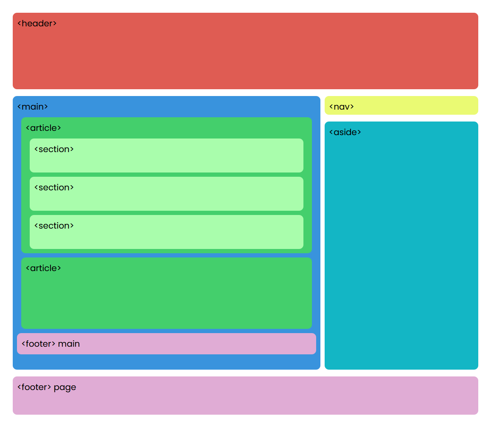

Etiquetas semánticas
Definición: las etiquetas semánticas son aquellas que nos ayudan a definir la restructira del documento y se califican como tal si nos informan sobre lo que trata su contenido
Entre las etiquetas mas usadas tenemos:
| Etiqueta | Descripción |
|---|---|
| <header> | Se usa para definir los elementos que son la introducción o navegacion de un documento, el indice de una sección, formularios de busqueda, etc |
| <hgroup> | Se usa para agrupar un conjunto de uno o mas elementos de encabezado |
| <nav> | Se usa para marcar una sección del documento cuya función es la navegación por la página web, es básicamente una sección con links de navegación. |
| <aside> | Se usa para marcar una parte del contenido que estárelacionado con el contenido de la página, pero no es parte de la misma, por ejemplo un glosario, grupos de enlaces a paginas relacionadas, etc |
| <main> | Representa el contenido predominante de la página. Una página debe tener solo un tag <main>.Solo debe estar contenida por tags de tipo <html>, <body>, <div> o <form>. |
| <article> | Representa una sección de contenido que puede ser distribuido de forma independiente. Algunos ejemplos pueden ser un post en un foro, un articulo de periódico, una entrada de un blog, un comentario, etc. |
| <section> | Representa a una sección genérica de una pagina. Agrupa contenidos que tienen una relación temática entre si. Algunos ejemplos pueden ser capitulo, pestañas de un menu, lista de noticias, etc |
| <footer> | Representa un pie de página para el elemento que lo contiene. Generalmente contiene información sobre el autor, licencia, términos de uso etc. |
Listas
Definición: las listas en HTML permiten crear conjuntos de elemtnos en forma de listas y generalmente precedidos de un guión o un número
Existen varios tipos de listas:
Listas ordenadas: Son quellas que muestran los elementos de una lista en orden, generalmente precedidos de un numero o letra que cumplen con esta regla. Se representan mediante la etiqueta OL (<ol>....</ol>), por ejemplo:
- Enero
- Febrero
- Marzo
- Abril
Listas desordenadas: Como su nombre lo indica, son aquellas que muestran los elementos de una lista sin ningun tipo de orden, y la viñeta en este caso es un punto, un cuadrado, etc. Se representan mediante la etiqueta UL (<ul>....</ul>), por ejemplo:
- Enero
- Febrero
- Marzo
- Abril
Listas de Definiciones: Se usan principalmente para mostrar información de la cual tenemos un valor y una definición. Se representan mediante la etiqueta dl (<dl>....</dl>). Por defecto los navegadores dejan el término y en la siguiente líne, junto con un tabulador, la definición. Por ejemplo:
- Sitio Web
- Un sitio web es un conjunto de archivos electrónicos y páginas web referentes a un tema en particular, incluyendo una página inicial de bienvenida generalmente denominada página de inicio o home page, a los cuales se puede acceder a través de un nombre de dominio y dirección en Internet específicos
- DNS
- El DNS (Domain Name System, Sistema de Nombres de Dominio) es un conjunto de protocolos y servicios que permite a los usuarios utilizar nombres en vez de tener que recordar direcciones IP numéricas.
- DHCP
- El DHCP no es más que un protocolo de tipo servidor/cliente que permite asignar de manera automática una dirección IP y configurar otros aspectos de la conexión para que esta pueda comunicarse con otras IP's.
Referencias
- Arumeinformatica.es. 2021. HTML5: Nuevas etiquetas semánticas y estructurales - Arume. [online] Disponible en: https://www.arumeinformatica.es/blog/html5-nuevas-etiquetas-semanticas-y-estructurales/2 [Consultado el 28 de Junio de 2021].
- Desarrolloweb.com. 2021. Etiquetas semánticas del HTML5. [online] Disponible en: https://desarrolloweb.com/articulos/etiquetas-semanticas-html5.html [Consultado el 28 de Junio de 2021].
- DEV Community. 2021. Etiquetas semánticas de HTML5. [online] Disponible en: https://dev.to/sapardo/etiquetas-semanticas-de-html5-3j7m [Consultado el 28 de Junio de 2021].